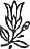

Sevgili Bhagwan,
Neden bütün dinler sekse karsı?
Bu yasamın en duyarlı alanlarından biri, çünkü yaşam gücüyle ilişkili. Seks... bu sözcük çok fazla ayıplanıyor. Seksin ayıplanmasının nedeni bütün dinlerin insanların hoşlandıkları şeylere karşı olmak zorunda olmalarıydı. İnsanların mutsuz olması, onların huzur, teselli, çölde bir anlık bir vaha bulma olanaklarını yıkmak onların çıkarınadır.
Bu dinler için kesinlikle gerekliydi -yani insanların her olasılıktan, her tür hazzetme potansiyelinden mahrum olmaları.
Neden onlar için bu denli önemliydi? Önemliydi çünkü sizi, zihninizi başka bir yere öteki dünyaya taşımak istiyorlardı. Eğer burada gerçekten mutluysanız, neden öteki dünya hakkında canınızı sıkasınız ki? Öteki dünyanın varolması için sizin mutsuz olmanız kesinlikle gerekliydi. Öteki dünya kendi içinde var değildir; o sizin mutsuzluğunuzda, acınızda, kederinizde vardır.
Bütün dinler size bu zararı veriyor. Daha çok mutsuzluk, ıstırap, yara, öfke, kızgınlık yaralıyorlar -ve hepsi de tanrı adına, güzel sözler adına.
Sevgiden bahsediyorlar ve sizin âşık olma olanağınızı yıkıyorlar.
Ben sekse karşı değilim. Benim için seks yaşamdaki her şey kadar kutsal- günah ya da kutsal olan hiçbir şey yok. Yaşam tektir -tüm ayrımlar sahtedir ve seks yaşamın tam merkezidir.
Bu nedenle asırlardır neler olduğunu anlamalısınız. Seksi bastırdığınız an enerjiniz kendini ifade etmek için yeni yollar aramaya başlar.. Enerji durağan kalamaz. Bu temel bir yasadır: enerji durağan kalamaz, her zaman dinamiktir, enerji dinamizmdir. Eğer onu zorlayıp üstüne bir kapı kapatırsanız, o da başka kapılar açar. Fakat onu hapis tutamazsınız. Eğer enerjinin doğal akışı engellenirse, o zaman doğal olmayan bir yolla akar.
Seksi bastırmış toplumların daha zengin olmasının nedeni budur.
Seksi bastırdığınız zaman, yerine sevginiz için bir şey, bir nesne koymalısınız. Kadın tehlikelidir, o cehenneme giden yoldur. Bütün kutsal kitaplar erkekler tarafından yazıldığı için cehenneme giden yol sadece kadındır. Ya erkekler?
Ben Hıristiyanlara, Müslümanlara, Hindulara eğer cehenneme giden yol kadınsa, o zaman sadece erkeğin cehenneme gidebileceğini söylüyorum; kadınlar asla gidemez. Yol her zaman olduğu yerde kalır, o hiçbir yere gidemez. Yolda insanlar giderler. Bu yolun şuraya gittiğini söyleriz, fakat bu bir dil aldatmasıdır; yol asla bir yere gitmez, sadece orada uzanır. Giden insanlardır. O zaman eğer cehenneme giden yol kadınlarsa, cehennem erkeklerle dolu olmalıdır. Sadece bir erkek-şovenist kulübü olmalıdır.
Kadınlar cehenneme giden yol değildir, fakat zihniniz bir kez bu şekilde şartlandı mı kadınları başka bir şeye yansıtırsınız; sevginiz için bir nesneye ihtiyacınız vardır. Sevgi nesneniz para olabilir. Neden bu kadar açgözlülük var? Neden insanlar deli gibi paraya bağlanıyorlar? Para onların sevgi nesnesi. Bir şekilde tüm yaşam enerjilerini paraya yöneltmeyi başardılar.
Şimdi onların paradan bile vazgeçmesini istiyorsunuz; yine sorun yaşanacaklar. Sevgi nesneleri politika oluyor. Politik bürokraside gittikçe daha yükselmek onların sevgi nesnesi oluyor. Politikacı başkanlığa, başbakanlığa göz koyuyor, tıpkı sevdalının sevgilisine göz koyduğu gibi. Bu sapıklıktır.
Eğilim gibi başka yönlere de yönlenilebilir; o zaman sevgi nesnesi kitaplar olur. Kişi dindar olabilir; o zaman sevgi nesnesi tanrı olur… Sevginizi hayali bir nesneye yansıtabilirsiniz, fakat bu size tatmin vermez.
From Darkness to Light,
24. Toplantı
25 Mart 1985